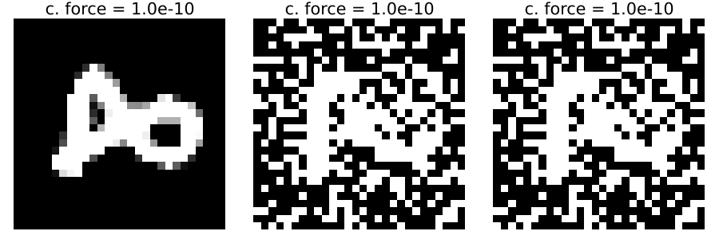
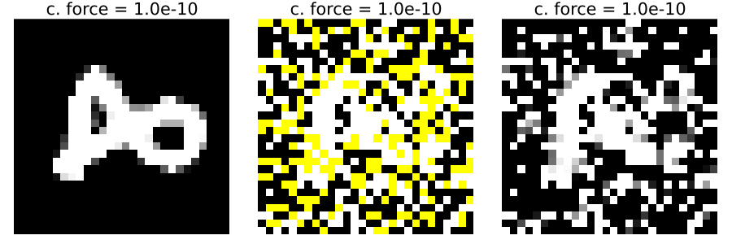

This example was automatically generated from a Jupyter notebook in the RxInferExamples.jl repository.
We welcome and encourage contributions! You can help by:
- Improving this example
- Creating new examples
- Reporting issues or bugs
- Suggesting enhancements
Visit our GitHub repository to get started. Together we can make RxInfer.jl even better! 💪
Recovering a hidden temperature field from hot/cold readings
Imagine a 2D grid of true temperatures T[i, j] over a surface. The sensors we have are simple: they only tell us whether a location is “hot” (1) or “cold” (0) relative to a threshold. We do not see temperatures directly. Our goal is to reconstruct the continuous temperature field from these binary observations by exploiting the fact that real temperatures vary smoothly across space.
Generative model (intuition)
- Latent field: Continuous temperatures
T[i, j]that are spatially smooth; neighbors tend to be similar. - Observations: Binary hot/cold readings
y[i, j] ∈ {0,1}with noise, modeled asy[i, j] ~ Bernoulli(σ(T[i, j])), whereσis the logistic function. The threshold can be absorbed into the offset ofT. - Spatial prior: A pairwise coupling between neighbors that penalizes sharp jumps, encouraging smooth reconstructions unless data strongly suggests boundaries.
In this notebook, we implement the logistic observation via a custom Sigmoid node and enforce spatial smoothness using Gaussian couplings between neighboring cells (a Gaussian MRF–like prior).
What this notebook does
- Simulates observations: Loads a smooth grayscale image as a proxy for
Tand produces noisy hot/cold readings via a logistic sensor. - Builds the model: Combines a logistic observation (
Sigmoid) with a spatial prior coupling neighbors. - Performs inference: Uses variational message passing to approximate the posterior over
T. - Visualizes results: Compares the binary observations to the recovered continuous temperature field (normalized).
Setup
Load the packages used for probabilistic modeling, image I/O, plotting, and numerical routines.
using Distributions, ExponentialFamilyProjection, Images, Plots, ReactiveMP, RxInfer, StableRNGs, StatsFunsCustom logistic observation factor
We introduce a $Sigmoid$ factor that models the logistic link and provide variational rules needed by the optimizer. This lets us couple the binary observations to the continuous latent field.
struct Sigmoid end
@node Sigmoid Stochastic [out, x]
@rule Sigmoid(:x, Marginalisation) (q_out::PointMass,) = begin
y = mean(q_out)
y = float(mean(q_out))
sign = 1-2y
# Provide logpdf, gradient, and Hessian for 1D logistic-Bernoulli
_logpdf = (out, x) -> (out[] = -softplus(sign * x))
_grad = (out, x) -> (out[1] = y - logistic(x))
_hess = (out, x) -> (out[1, 1] = -logistic(x) * (1 - logistic(x)))
return ExponentialFamilyProjection.InplaceLogpdfGradHess(_logpdf, _grad, _hess)
end
function BayesBase.prod(::GenericProd, left::UnivariateGaussianDistributionsFamily, right::ExponentialFamilyProjection.InplaceLogpdfGradHess)
m = mean(left)
σ = var(left)
combined_logpdf! = (out, x) -> begin
right.logpdf!(out, x)
out[] = logpdf(left, x) + out[]
end
combined_gradhes! = (out_grad, out_hess, x) -> begin
out_grad, out_hess = right.grad_hess!(out_grad, out_hess, x)
out_grad .= out_grad .- ((x .- m) ./ σ)
out_hess .= out_hess .- 1 / σ
return out_grad, out_hess
end
return ExponentialFamilyProjection.InplaceLogpdfGradHess(combined_logpdf!, combined_gradhes!)
end
function BayesBase.prod(::GenericProd, left::ExponentialFamilyProjection.InplaceLogpdfGradHess, right::UnivariateGaussianDistributionsFamily)
return prod(GenericProd(), right, left)
endData: proxy temperature field and binary observations
We load a smooth grayscale image as a stand-in for the true temperature field, normalize it, and generate noisy hot/cold readings by sampling from $\mathrm{Bernoulli}(\sigma(T)).$
rng = StableRNG(112)
mnist_picture = load("mnist_picture.png")
mnist_picture
sample_matrix = convert(Matrix{Float64}, mnist_picture);
normalized_matrix = (sample_matrix .- mean(sample_matrix))/std(sample_matrix)
observation_matrix = begin
o = zeros(28, 28)
for i in 1:28, j in 1:28
o[i, j] = rand(rng, Bernoulli(logistic(normalized_matrix[i, j])))
end
o
end
Gray.(observation_matrix)
Model and first inference run
- The model places a Gaussian prior with neighbor couplings on the latent field $x[i,j]$ and uses a logistic observation $y \sim \mathrm{Bernoulli}(\sigma(x))$ via the custom $Sigmoid$ factor.
- We run variational inference and visualize three panels: normalized proxy field, binary observations, and the reconstructed field.
@model function sigmoid_ising(h, w, image, connection_force)
# x_extra_prior ~ NormalMeanVariance(0, 1)
local x
# as smaller variance as closer the estimates
var_used = 1.0/connection_force
prior ~ NormalMeanVariance(0, var_used)
for i in 1:h, j in 1:w
x[i, j] ~ NormalMeanVariance(prior, var_used)
end
for i in 1:h, j in 1:w
image[i, j] ~ Sigmoid(x[i, j])
if i < h && j < w
x[i, j] ~ NormalMeanVariance(x[i+1, j], var_used)
x[i, j] ~ NormalMeanVariance(x[i, j+1], var_used)
end
if i < h
x[i, j] ~ NormalMeanVariance(x[i+1, j], var_used)
end
if j < w
x[i, j] ~ NormalMeanVariance(x[i, j+1], var_used)
end
end
end
# Streaming init & autoupdates
sigmoid_init = @initialization begin
q(x) = NormalMeanVariance(0.0, 1.0)
q(prior) = NormalMeanVariance(0.5, 1)
end
binary_constraints = @constraints begin
q(x) :: ProjectedTo(NormalMeanVariance, parameters = ProjectionParameters(
tolerance = 1e-8,
strategy = ExponentialFamilyProjection.GaussNewton(nsamples = 1), # deterministic
))
q(x, prior) = q(x)q(prior)
q(x) = MeanField()
# q(x_prior, x, x_extra, x_extra_prior) = q(x_prior)q(x)q(x_extra, x_extra_prior)
end
result = infer(
model = sigmoid_ising(h=28, w=28, connection_force = 1),
data = (image = observation_matrix,),
returnvars = KeepEach(),
# options = (limit_stack_depth = 100, ),
iterations = 5,
initialization = sigmoid_init,
constraints = binary_constraints,
showprogress = true,
);
sigmoid_outputs = map(mean, result.posteriors[:x][5]);
normalize_sigmoid_outputs = (sigmoid_outputs .- mean(sigmoid_outputs))/std(sigmoid_outputs)
l = @layout [
grid(1,3)
]
plot_obj = plot(layout=l)
plot!(plot_obj, Gray.(normalized_matrix), subplot=1, legend=false, framestyle=:none, ticks=nothing, aspect_ratio=:equal)
plot!(plot_obj, Gray.(observation_matrix), subplot=2, legend=false, framestyle=:none, ticks=nothing, aspect_ratio=:equal)
plot!(plot_obj, Gray.(normalize_sigmoid_outputs), subplot=3, legend=false, framestyle=:none, ticks=nothing, aspect_ratio=:equal)
Introduce missing observations
We simulate missing data by randomly masking a fraction of binary readings. Masked locations will be rendered in yellow in the visualization.
mask_probability = 0.25
masked_pattern = rand(rng, Bernoulli(mask_probability), size(observation_matrix)...)
# Apply mask to observations as Union{Missing, Float64}
masked_observation_matrix = Matrix{Union{Missing, Float64}}(undef, size(observation_matrix)...)
@inbounds for j in axes(observation_matrix, 2), i in axes(observation_matrix, 1)
masked_observation_matrix[i, j] = masked_pattern[i, j] ? missing : Float64(observation_matrix[i, j])
endMissing binary observations and the Monte Carlo message
When some binary outputs y[i,j] in {0,1} are missing, we can still perform inference by passing an approximate message from the observation factor using the variational marginal over the latent field.
For the logistic observation model y | x ~ Bernoulli(σ(x)), the factor contribution is $ f(y \mid x) = \mathrm{Bernoulli}(y; \sigma(x)) = \sigma(x)^y (1-\sigma(x))^{1-y}. $ The message needed by variational updates in many formulations is the expected log-factor under the current marginal q(x): $ \mathbb{E}{q(x)}[\log f(y \mid x)] = y\,\mathbb{E}{q(x)}[\log \sigma(x)] + (1-y)\,\mathbb{E}_{q(x)}[\log(1-\sigma(x))] = \mu y + C. $ Note that $ \log \sigma(x) - \log(1-\sigma(x)) = x.$
Implement observation message for missing outputs
We add a simple rule for $q(y)$ when needed: use the current mean of $q(x)$ passed through the logistic to parameterize a Bernoulli. This provides a lightweight, consistent message for the missing-observation case.
@rule Sigmoid(:out, Marginalisation) (q_x::NormalMeanVariance, ) = begin
return Bernoulli(logistic(mean(q_x)))
endInference with missing observations
We now run the same model on the masked data. The observation message (previous cell) lets inference proceed for locations where $y$ is missing.
result_masked = infer(
model = sigmoid_ising(h=28, w=28, connection_force=1),
data = (image = masked_observation_matrix,),
returnvars = KeepEach(),
# options = (limit_stack_depth = 100, ),
iterations = 5,
initialization = sigmoid_init,
constraints = binary_constraints,
showprogress = true,
);Visualize masked observations and reconstruction
- Yellow pixels mark missing observations; gray pixels show observed hot/cold readings rendered as grayscale for context.
- We compare the original normalized proxy field, the binary observations, the unmasked reconstruction, the masked observation map, and the masked reconstruction.
sigmoid_outputs_masked = map(mean, result_masked.posteriors[:x][5]);
normalize_masked_sigmoid_outputs = (sigmoid_outputs_masked .- mean(sigmoid_outputs_masked))/std(sigmoid_outputs_masked)
yellow = colorant"yellow"# Replace missings with 0 just to build the base gray image in RGB
masked_img = RGB.(Gray.(replace(masked_observation_matrix, missing => 0.0)))
masked_img[masked_pattern] .= yellow
plot_obj_masked = plot(layout=@layout [
grid(1,5)
])
plot!(plot_obj_masked, Gray.(normalized_matrix), subplot=1, legend=false, framestyle=:none, ticks=nothing, aspect_ratio=:equal)
plot!(plot_obj_masked, Gray.(observation_matrix), subplot=2, legend=false, framestyle=:none, ticks=nothing, aspect_ratio=:equal)
plot!(plot_obj_masked, Gray.(normalize_sigmoid_outputs), subplot=3, legend=false, framestyle=:none, ticks=nothing, aspect_ratio=:equal)
plot!(plot_obj_masked, masked_img, subplot=4, legend=false, framestyle=:none, ticks=nothing, aspect_ratio=:equal)
plot!(plot_obj_masked, Gray.(normalize_masked_sigmoid_outputs), subplot=5, legend=false, framestyle=:none, ticks=nothing, aspect_ratio=:equal)
Sweep over connection_force and animate results
We will run inference for a range of connection_force values on both the original noised observations and the masked observations, and generate animations to visualize how the reconstruction changes.
exponents = range(-10.0, 10.0, length=25)
connection_forces = 10.0 .^ exponents
iterations_anim = 5
function run_reconstruction(image, connection_force; h=28, w=28, iterations=iterations_anim)
result = infer(
model = sigmoid_ising(h=h, w=w, connection_force=connection_force),
data = (image = image,),
returnvars = KeepEach(),
iterations = iterations,
initialization = sigmoid_init,
constraints = binary_constraints,
showprogress = false,
)
xs = map(mean, result.posteriors[:x][iterations])
return (xs .- mean(xs)) / std(xs)
end
# helper for animationrun_reconstruction (generic function with 1 method)anim_noised = @animate for (idx, cf) in enumerate(connection_forces)
k = exponents[idx]
recon = run_reconstruction(observation_matrix, cf)
l = @layout [grid(1,3)]
plt = plot(layout=l, size=(900, 300), title="c. force = $(round(10^k, sigdigits=2))")
plot!(plt, Gray.(normalized_matrix), subplot=1, legend=false, framestyle=:none, ticks=nothing, aspect_ratio=:equal)
plot!(plt, Gray.(observation_matrix), subplot=2, legend=false, framestyle=:none, ticks=nothing, aspect_ratio=:equal)
plot!(plt, Gray.(recon), subplot=3, legend=false, framestyle=:none, ticks=nothing, aspect_ratio=:equal)
end
gif(anim_noised, "ising_connection_force_noised.gif", fps=5);
anim_masked = @animate for (idx, cf) in enumerate(connection_forces)
k = exponents[idx]
recon = run_reconstruction(masked_observation_matrix, cf)
l = @layout [grid(1,3)]
plt = plot(layout=l, size=(900, 300), title="c. force = $(round(10^k, sigdigits=2))")
plot!(plt, Gray.(normalized_matrix), subplot=1, legend=false, framestyle=:none, ticks=nothing, aspect_ratio=:equal)
plot!(plt, masked_img, subplot=2, legend=false, framestyle=:none, ticks=nothing, aspect_ratio=:equal)
plot!(plt, Gray.(recon), subplot=3, legend=false, framestyle=:none, ticks=nothing, aspect_ratio=:equal)
end
gif(anim_masked, "ising_connection_force_masked.gif", fps=5);
Conclusion
- We reconstructed a smooth latent temperature field from binary hot/cold readings using a logistic observation model and a spatial (neighbor) prior.
- With missing observations, adding an approximate observation message allows inference to proceed; the reconstruction remains coherent where data is absent.
- The connection force is a very important hyperparameter in this model that controls the smoothing. If it's too small, no recovery is possible—the model just follows the data. If it's too strong, it can overpower the data completely.
This example was automatically generated from a Jupyter notebook in the RxInferExamples.jl repository.
We welcome and encourage contributions! You can help by:
- Improving this example
- Creating new examples
- Reporting issues or bugs
- Suggesting enhancements
Visit our GitHub repository to get started. Together we can make RxInfer.jl even better! 💪
This example was executed in a clean, isolated environment. Below are the exact package versions used:
For reproducibility:
- Use the same package versions when running locally
- Report any issues with package compatibility
Status `/tmp/jl_A77yVv/Project.toml`
[31c24e10] Distributions v0.25.123
⌃ [17f509fa] ExponentialFamilyProjection v3.1.1
[916415d5] Images v0.26.2
[91a5bcdd] Plots v1.41.6
[a194aa59] ReactiveMP v5.6.5
[86711068] RxInfer v4.7.0
[860ef19b] StableRNGs v1.0.4
[4c63d2b9] StatsFuns v1.5.2
Info Packages marked with ⌃ have new versions available and may be upgradable.